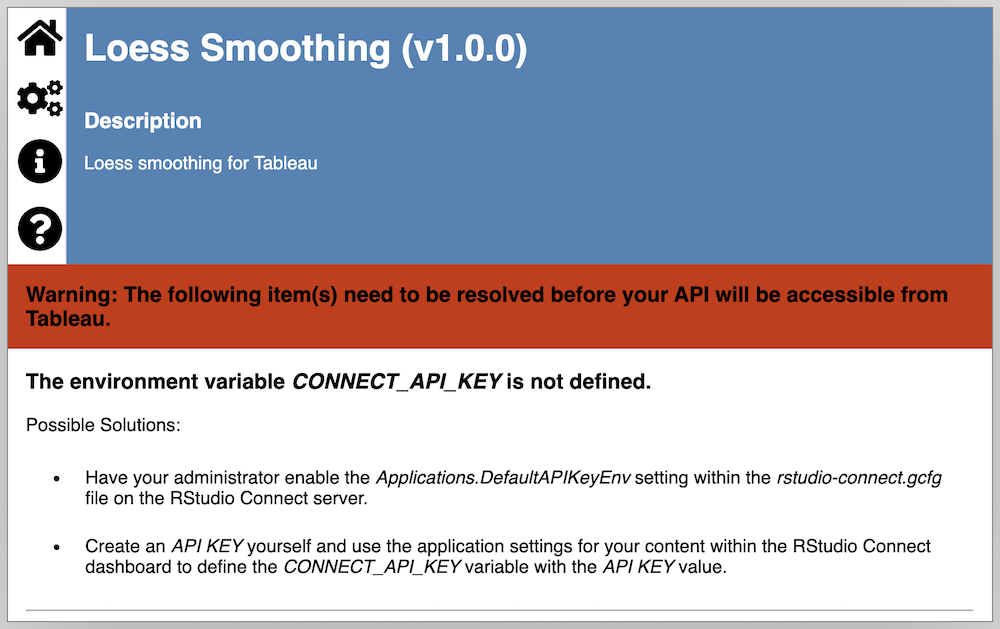

vignettes/publishing-extensions.Rmd
publishing-extensions.RmdRStudio Connect is a publishing platform for sharing the work produced by data science teams. It supports content in both R and Python, including Shiny apps and Plumber APIs. You can publish content to RStudio Connect in a number of ways, including 1-click publishing from the RStudio IDE.
plumbertableau integrates seamlessly with RStudio Connect. You can host any number of plumbertableau extensions on RStudio Connect, and Connect will ensure that requests from Tableau are passed to the correct extension.
TableauExtension.Enabled must not be set to False.Server.Address must be configured.See the RStudio Connect Admin Guide for more information about configuring Connect.
Extensions published to an incompatible RStudio Connect server will provide a warning message that detects which of the above criteria are not met.

Your RStudio Connect server must be configured as an Analytics Extension in Tableau. Tableau requires an API key to authenticate with RStudio Connect. This API key will be used for all requests from Tableau to RStudio Connect, and the Tableau instance will have access to any content on Connect that the API key’s owner can access.
We recommend creating a “service account” (an account used only by Tableau, not by any individual) on RStudio Connect, and configuring Tableau with an API key for this account. If you name the service account “Tableau”, simply add the “Tableau” to the Access List for any content it should be able to access. This way, you can more finely control what content Tableau can access without affecting any users.
Before you can use extensions hosted on an RStudio Connect server from Tableau, you’ll need to register that server in Tableau’s Extensions settings. The steps to configure analytics extensions in Tableau differ slightly depending on whether you’re using Tableau Desktop or Tableau Server/Online.
If you’re using Tableau Desktop, you don’t need to use authentication if you’re using an extension running locally in R.
All content hosted on RStudio Connect receives a random identifier, which is used as part of its default URL. You can optionally set a custom URL (called a vanity URL) for any piece of content on RStudio Connect in its control panel. By default, only administrators can assign vanity paths, but RStudio Connect can be configured to allow all publishers to assign them.
We recommend using vanity paths for plumbertableau extensions. You must use a content identifier in calls to Tableau extensions, and a vanity URL makes the difference between SCRIPT_REAL("/content/c8b1e158-4fab-4d09-9791-8674afba86eb/predict", ...) and SCRIPT_REAL("/loess/predict", ...).
This isn’t required. You can access extensions published to RStudio Connect by their content identifier or vanity URL. If an extension has a vanity URL, RStudio Connect will prefer that in all of the documentation it generates.
plumbertableau supports debug logging via the debugme R package.
To enable debug logging on a deployed extension, open the “Vars” section of the content control panel in RStudio Connect. Ensure that an environment variable called DEBUGME exists and that it contains the text plumbertableau.
Additional messages will appear in the “Logs” tab of the control panel, with information about the contents and processing of each request the extension receives.